First create a new project by tapping on Projects, the + symbol, and then enter a name for the project:
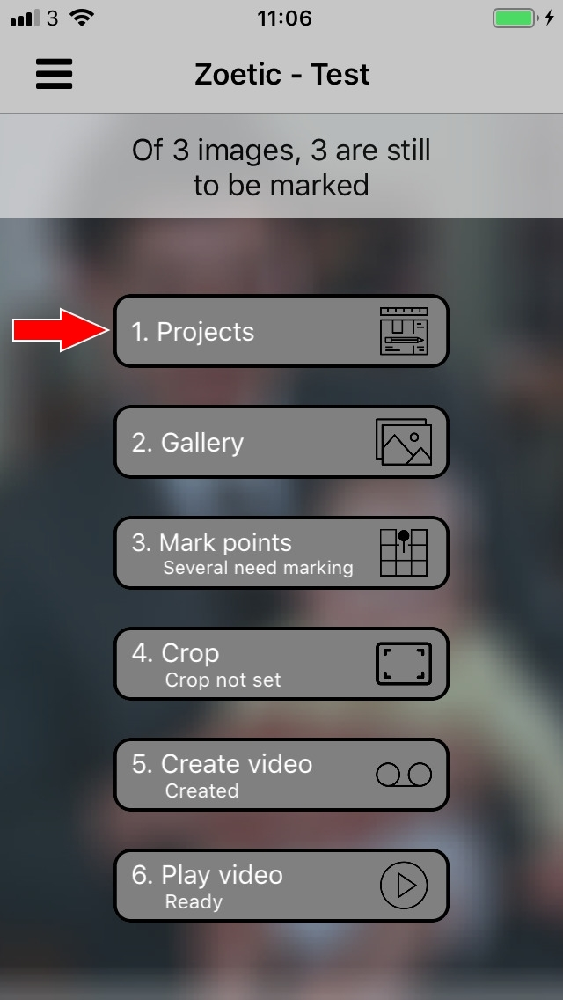 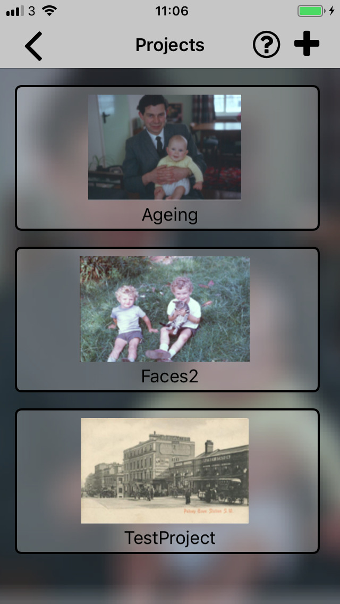 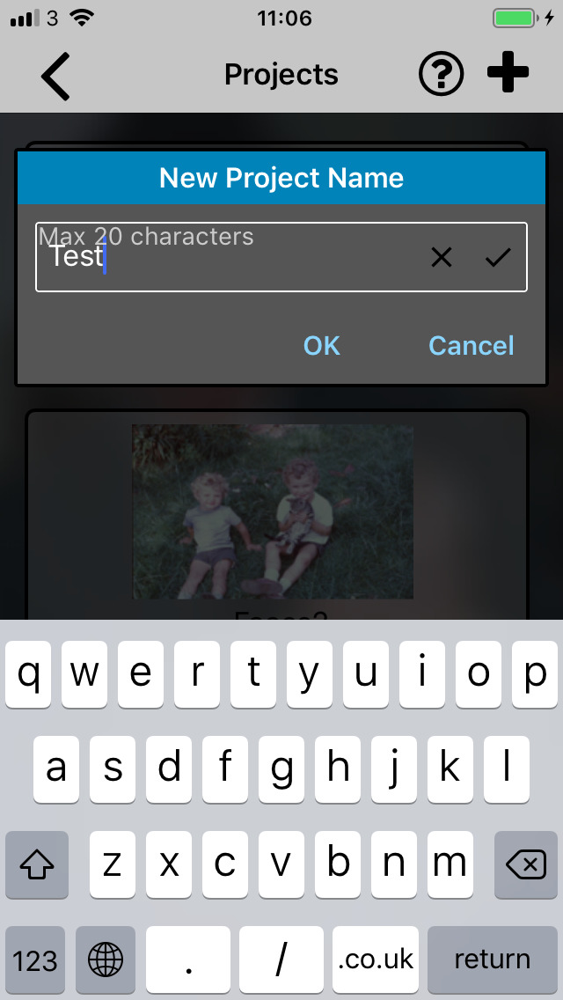
Select the images you wish to use in the project. Three images have been selected for this example. (You can add more images later.)
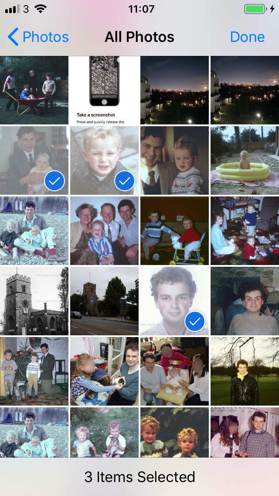
From Zoetic's main screen, tap Mark Points and then for each image enter the two alignment points. We are using the pupils of the eyes for this project. Make sure each point is entered in the same order, in this case the first point is the subject's right (our left) eye.
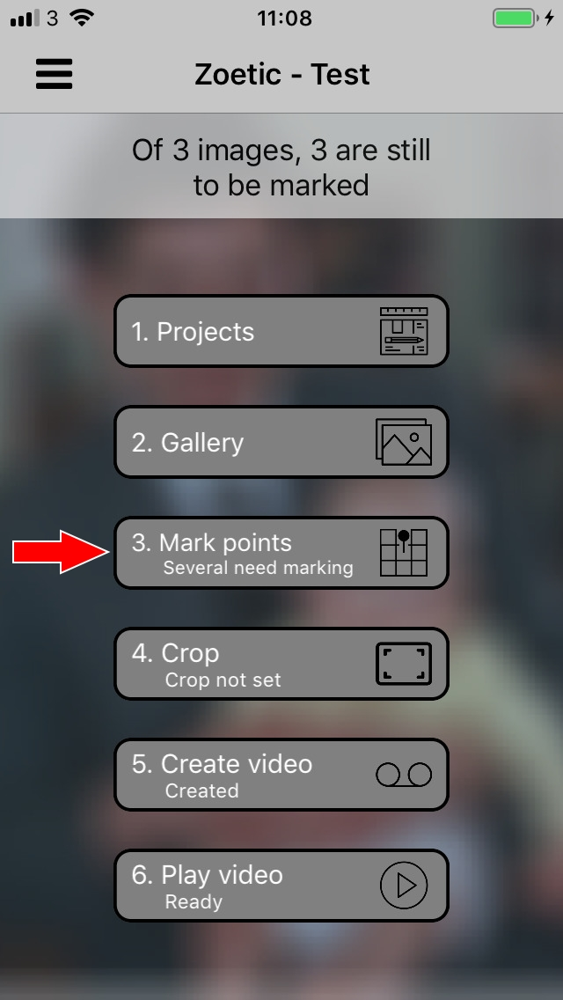 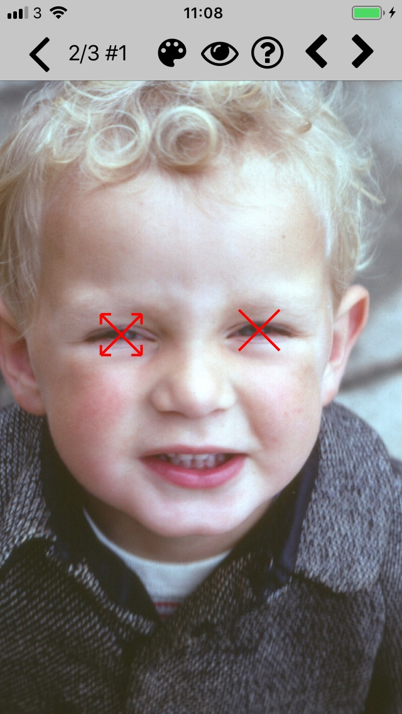If you are using images of faces, and you wish to use the eyes as the alignment points, you can use the eye detection function (tap the eye icon) to automatically select the alignment points. If more than one face is detected, the user will be prompted to tap the rectangle containing the required face.
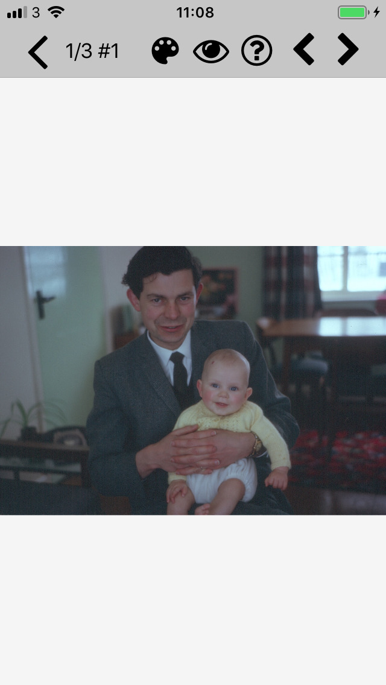
Once the images have been marked, return to the main screen and tap Crop. The images are aligned and the "average" image is generated. Using this image you will specify the area of the aligned images that will be used to generate the video. (You may be able to just make out the three images superimposed on each other.) The blue rectangle, drawn by the user, specifies the area to be used. In this case we are interested in seeing how the head of the subject changes between the three images.
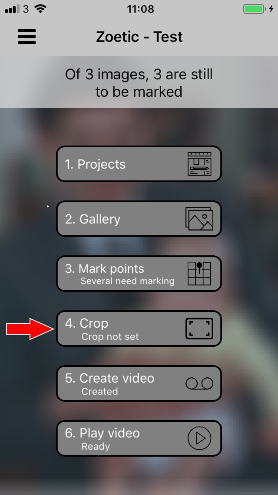 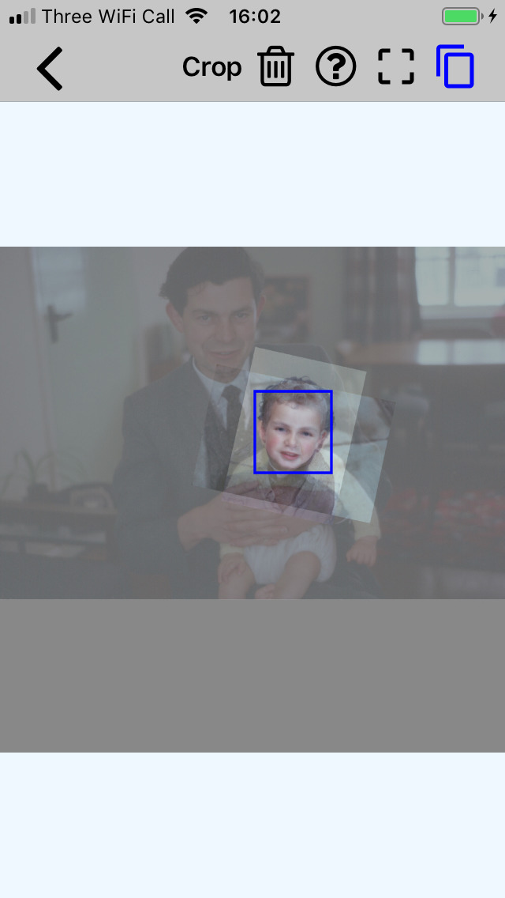
Before generating the video, enter any required settings such as how smooth the transitions should be between images (Number of intermediate steps), tap Create Video, and then once created, tap Play Video to enjoy the results.
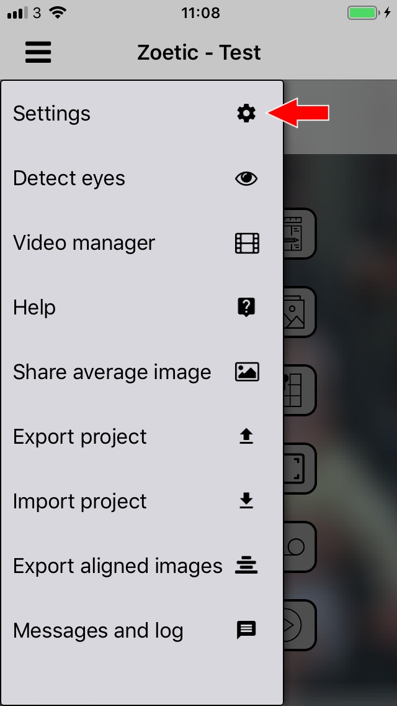 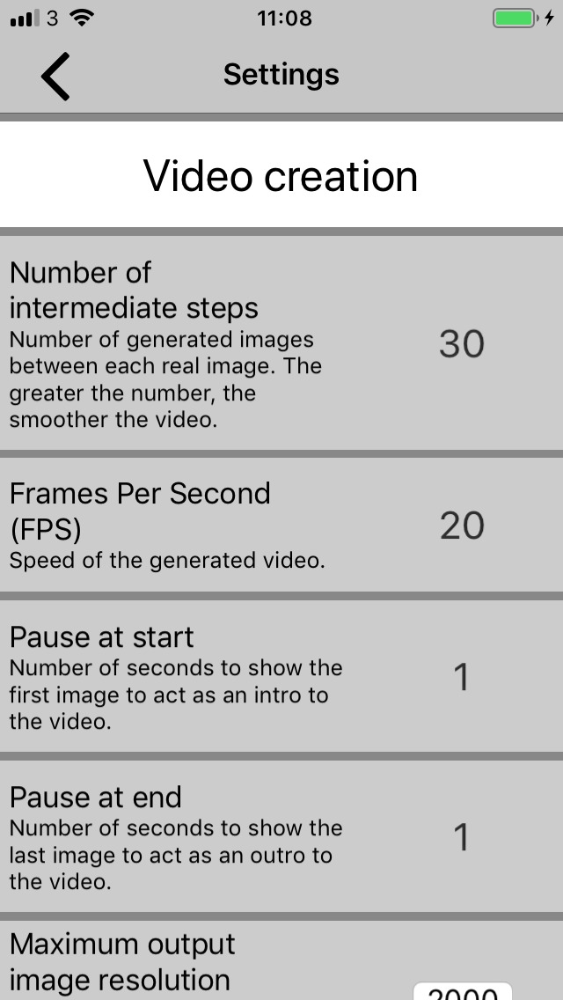 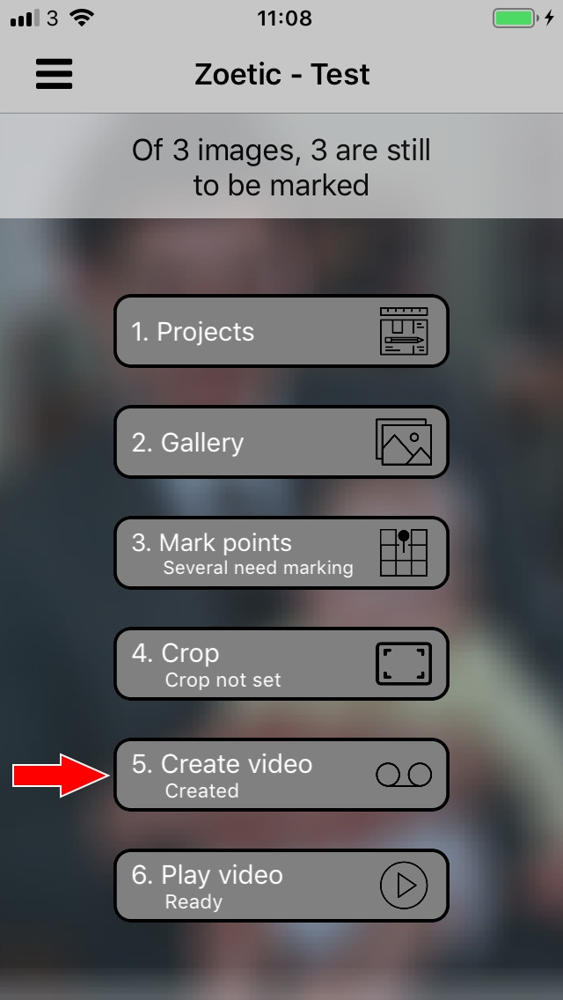 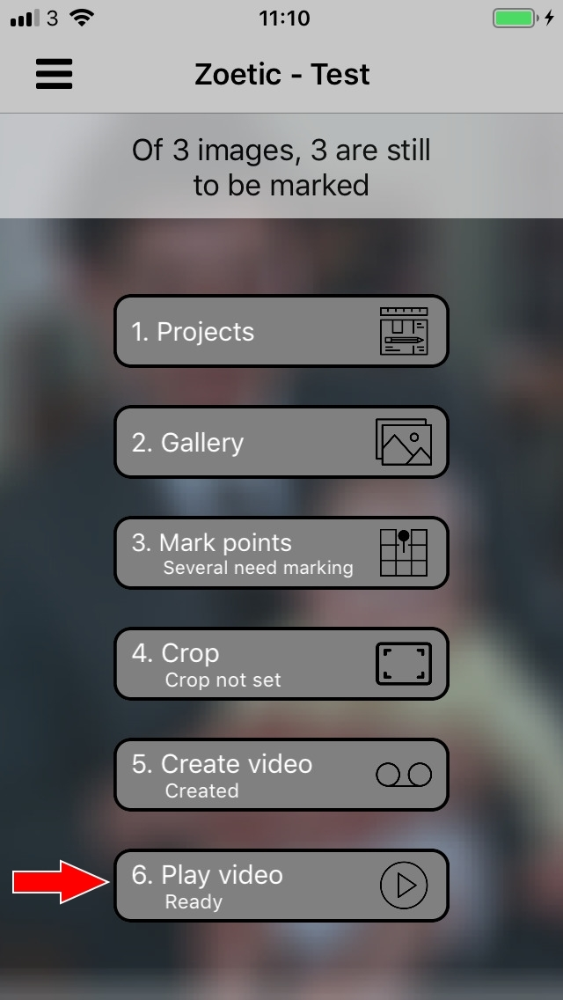
If using eyes for the alignment points, it is possible to process all the project's images in one operation using the menu's Detect eyes function. However, the user should still check on the results since where there are multiple faces in an image, the wrong face may be chosen. In which case the user will need to correct the image via the Mark points function. Using Detect eyes on the current project results in the following. The first image is incorrectly marked since we are after the baby's, rather than the father's, eyes.
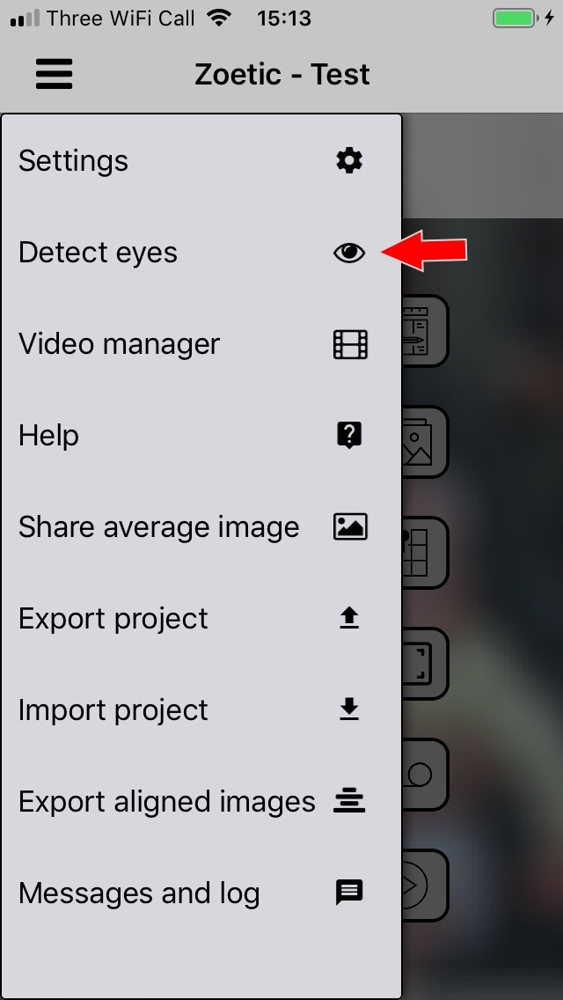 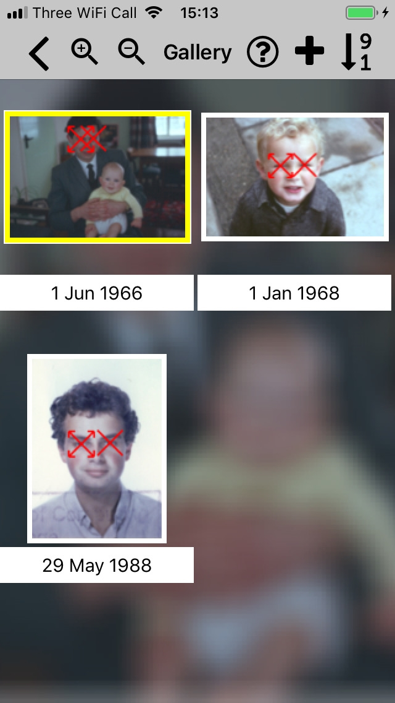A video showing an expanded set of these steps can be found here. The output generated by the project can be found at this point in the video.
| Back | Further discussion |
|---|